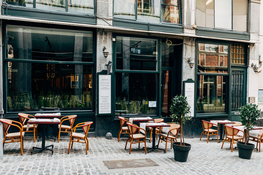

About Cafe Frost

Cafe Frost began as a cozy brunch nook in 2017, nestled in the heart of the city. Founded by two lifelong friends with a passion for comfort food and artisanal coffee, the café quickly became a local favorite.
Our mission is to serve high-quality meals made from locally-sourced ingredients, in a space that feels like home. Whether you're starting your morning with our signature blueberry pancakes or winding down with an iced latte, Cafe Frost is here to make your day delicious.
We’re proud of our roots and thrilled to be part of your daily routine. Come in, relax, and enjoy a taste of what makes Cafe Frost special.